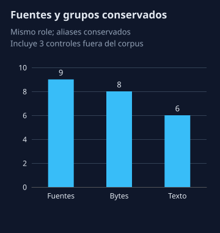
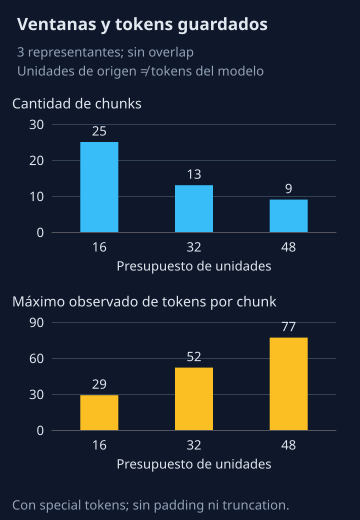
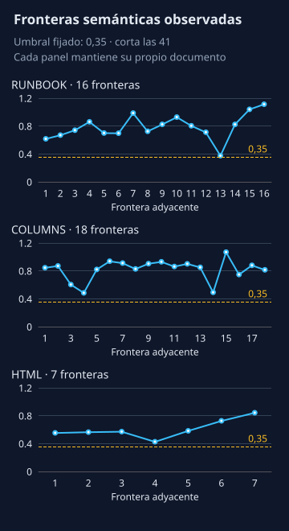
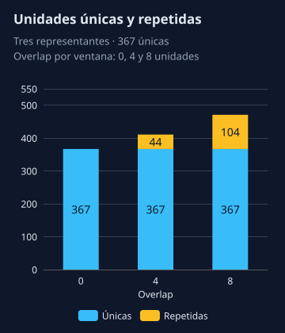
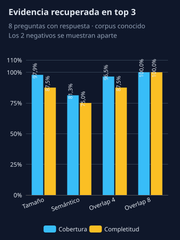

Del documento al texto
Extracción y OCR guardados de documentos sintéticos. El navegador no ejecuta Poppler ni Tesseract, no carga modelos y no envía documentos. El recorrido dibujado muestra el texto reconstruido, no una traza interna del OCR.
Cargando captura…
Código, documentos y captura original
Palabras recuperadas del PDF
Salida raw conservada
| Ordinal | Texto | Caja en puntos |
|---|
OCR y confidence, sin borrar palabras
El TSV original no tiene cabecera. Las palabras de este panel proceden de la derivación corregida, sin repetir el OCR. Confidence no es una probabilidad calibrada.
Texto original reconocido
Referencia anterior al reconocimiento
| Ordinal | Texto | Confidence | Caja en píxeles |
|---|
Una página, tres órdenes de lectura
Heurística del fixture: cuerpo entre y = 70 e y = 700 puntos y corte conocido x = 306. No detecta columnas en documentos nuevos. El título y footer siguen conservados en la extracción original.
Texto reconstruido
| Posición | Ordinal original | Texto |
|---|
Bloques de main, sin ejecutar scripts
HTML original como texto, sin ejecutarlo
Ambas variantes tienen main idéntico y footer distinto. Eso no implica que los archivos originales sean iguales.
Del rango canónico a su fuente
Los offsets son unidades UTF16 del texto canónico. Los locators apuntan a palabras PDF/OCR, texto de bloques HTML parseados o texto plano decodificado. Los controles llevan role control y no entran en recuperación.
Identidad, versiones y política
Texto canónico y selección
Cita y referencias completas
| Ordinal | Texto | Start | End | Locator original |
|---|
Igualdad declarada y aliases conservados
El criterio normalizado compara texto NFC unido por espacios, preservando mayúsculas, números y negaciones. Se agrupa dentro del mismo role. No son permisos de usuario ni equivalencia semántica.
Grupo, hash y versiones completas
| Fuente | Archivo | Versión de bytes |
|---|
Candidatos near duplicate, sin fusión

Ventanas por unidades y tokens reales guardados
Solo tres representantes del corpus, sin los controles. Presupuestos por unidades de origen sin whitespace interno, no tokens del modelo. Overlap 0; cola conservada. El navegador no ejecuta el tokenizer y este panel conserva la fase previa a evaluar recuperación.
ID, rangos y secuencia de tokens
Desplaza la tabla horizontalmente para ver todos los offsets y la columna de tokens.
| N.º | First | Last | Start | End | Unidades | Tokens |
|---|

Distancias reales y umbral de corte
44 embeddings locales guardados; 41 distancias adyacentes. El umbral original 0,35 cortó todas las fronteras. El deslizador solo simula la agrupación sobre esas distancias: no ejecuta otro modelo ni modifica la evaluación guardada.
Pieza anterior
Pieza siguiente
Decisión original y distancia
| First | Last | Unidades | Texto |
|---|

Qué unidades se repiten con overlap
Ventanas guardadas de 32 unidades; paso 32, 28 o 24. La cobertura cuenta ordinales de una misma representación. Una unidad repetida no añade evidencia nueva.
Identidad y offsets

Qué evidencia contienen los resultados
Rankings BM25 guardados, no una búsqueda nueva. La tabla del artículo usa top 3. Cambiar k inspecciona el ranking archivado. Gold fijado antes de la inferencia y la búsqueda, con documentos sintéticos ya conocidos; no es un test ciego.
Hechos requeridos y alternativas de fuente
Cobertura por hecho y unidades repetidas
